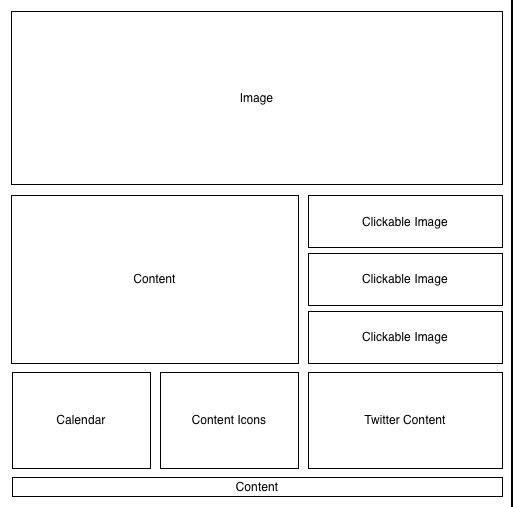
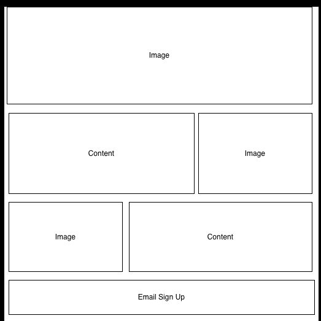
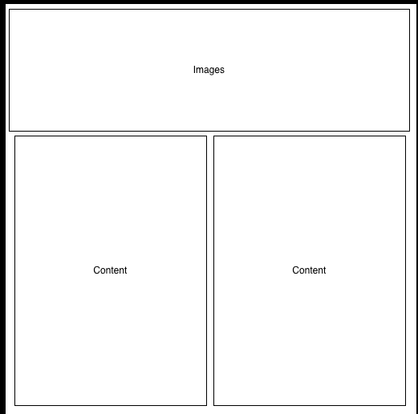

Sputnik Creative - This website was great and really easy to read! I knew exactly where I needed to navigate and wasn't confused where to go next. They did a lot of full page sections. I really like the full page sections because it makes the info short and to the point. Very streamlined. The first frame of the website (logo) could be enlarged. I feel it is too small compared to the other objects on the page. Overall, I didn't find anything else.
Koskela - This website maximizes the use of every area of the website and makes it functional as well. When the page loads, it is an entire screenshot of a warehouse with artsy furniture. As you scroll down the page, they have divided each individual event into 3 sub sections that have either a picture, additional content, or contact info in 3 boxes within the frame. It's also staggered so it keeps the website viewer engaged. I really enjoyed the flow of content. The only part I didn't like was the bottom of the page - missing information. It looks like they are still in the process of finishing up their website though. The bottom of the website could be broken up into different boxes/categories so it doesn't seem so out of place. Everything flowed until you got to the end. Also, the newsletter section at the bottom of the page takes up a ton of room. I would minimize that by at least half. I would also put the menu bar under the Welcome to Koskela section because I feel that is more of a draw than the little menu section break.
Sputnik Creative is very vertical in their styling. Your eye is drawn to the center of the screen which follows the information all the way down the page. Koskela has a more horizontal styling to their webpage that makes the viewers eye zigzag across the page. The other pages that are linked to the main Koskela page are more vertical in their styling like the Sputnik Creative webpage. It is nice but I prefer the zigzag because of their artistic content. It seems to mesh well with their branding.
I really like the simplicity of the pages and how easy it is to read. I do not like having to look for information or navigate through a cluttered webpage.
Homepage is very easy to naviagte. Everything is laid out simply. The focal point is the main image on the page, hierarchy is in layers - image, content, clickable image, and the last row of calendar, content icons, and twitter content. Balance across different grid-based layouts - I think it looks balanced.
Tried to get creative with the layout and did not succeed as well as I would have hoped. Still getting used to Omnigraffle. I wanted to be able to balance content and the images more. Focal point is supposed to be the image but maybe it is in conflict with the content and images below it. Hierarchy - same as the previous page. Balance across different grid-based layouts - is not ideal. Thoughts?.
Content focused page. This is where content submissions will go. Focal point is the image on the top of the page. Hierarchy - images and then the content below. Balance across different grid-based layouts - yes.
